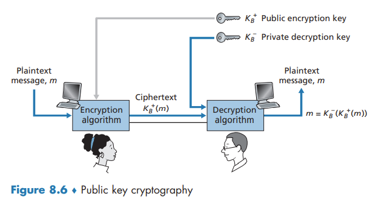

↩️ ttm4100
Principles of Cryptography

In symmetric key systems, Alice’s and Bob’s keys are identical and are secret. In public key systems, a pair of keys is used. One of the keys is known to both Bob and Alice (indeed, it is known to the whole world). The other key is known only by either Bob or Alice (but not both).
Symmetric Key Cryptography
one can distinguish three different scenarios, depending on what information the intruder has.
- Ciphertext-only attack.
- Known-plaintext attack.
- Chosen-plaintext attack.
Block Ciphers
In a block cipher, the message to be encrypted is processed in blocks of k bits.
Cipher-Block Chaining
block ciphers typically use a technique called Cipher Block Chaining (CBC). The basic idea is to send only one random value along with the very first message, and then have the sender and receiver use the computed coded blocks in place of the subsequent random number.
Public Key Encryption

Suppose Alice wants to communicate with Bob. As shown in Figure 8.6, rather than Bob and Alice sharing a single secret key, Bob instead has two keys - a public key that is available to everyone in the world and a private key that is known only to Bob. Alice then encrypts her message, m, to Bob using Bob’s public key and a known encryption algorithm. Bob receives Alice’s encrypted message and uses his private key and a known decryption algorithm to decrypt Alice’s encrypted message.
Since Bob’s encryption key is public, anyone can send an encrypted message to Bob, including Alice or someone pretending to be Alice.